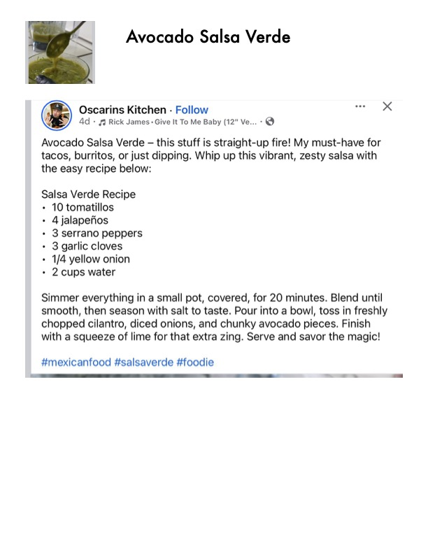

Avocado Salsa Verde

Original cookbook page 785
Ingredients
- 10 tomatillos
- 4 jalapenos
- 3 serrano peppers
- 3 garlic cloves
- 1/4 yellow onion
- 2 cups water
- Salt to taste
- Fresh cilantro
- Diced onions
- Chunky avocado pieces
- Lime juice
Instructions
- Simmer everything in a small pot, covered, for 20 minutes.
- Blend until smooth, then season with salt to taste.
- Pour into a bowl, toss in freshly chopped cilantro, diced onions, and chunky avocado pieces.
- Finish with a squeeze of lime for that extra zing. Serve and savor the magic!
Recipe #785 from collection